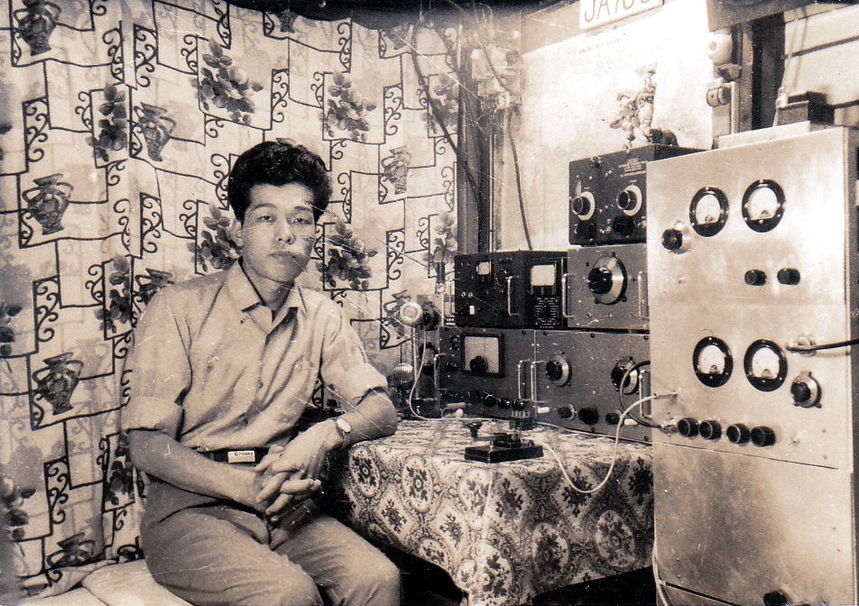
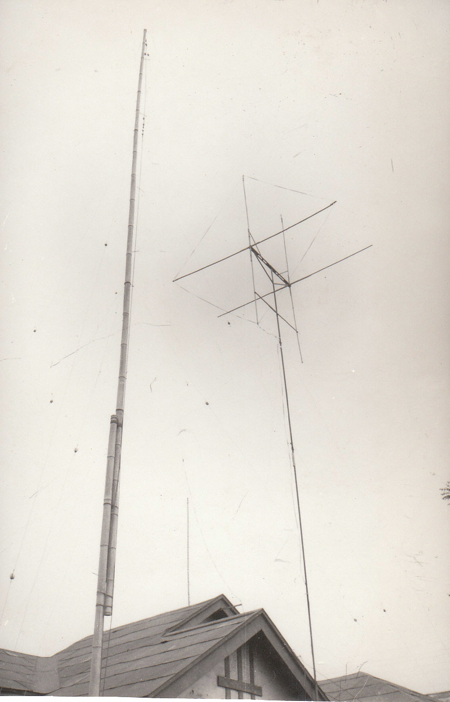
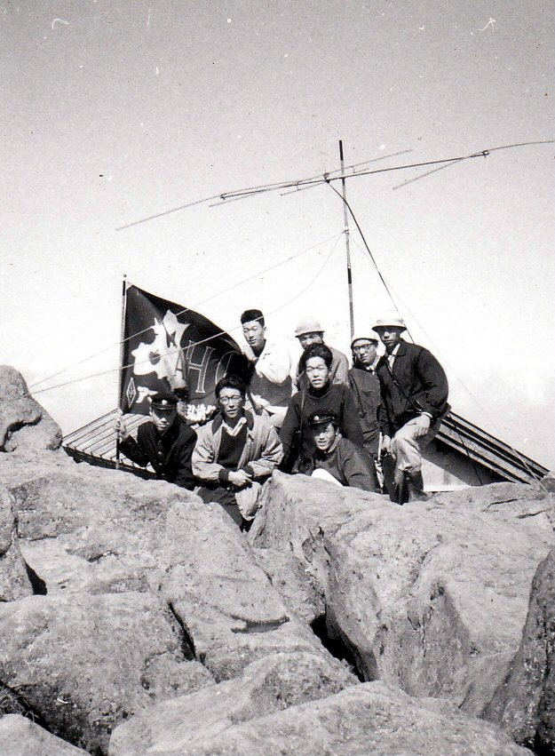
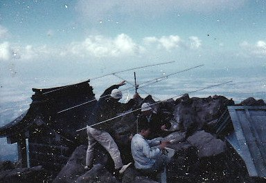

[DX Report Jan-Dec.1961] TIME:JST(UTC+0900) Report from JA7JU (QN00) ◎1961年(昭和36年)4月からアマチュア無線従事者操作範囲の変更で、第2級アマチュア無線技士(2アマ) にオールバンド、オールモードの空中線電力100W以下の運用が許可された。同時に電信級、電話級ア マチュア無線技士は21MHz帯以上の運用も認められた。 サイクル19もいよいよ終盤。50MCでのDX QSOはほとんど見向きもされなくなった。 東通工(現・SONY)がトランジスターラジオを発売して、この頃からトランジスターを使った自作のミニ パワー機を作り楽しむ局も現れた時代。 
01-31.Jan.1961 ◎50MCでは国内外のDXとのQSOは無し。   アンテナは28MHzの2ELループアンテナと7MHz用のフォールデット・ダイポール。
02.May.1961
◎14MC帯で初運用(参考)。
VK9GR 23:35 14.- AM QSO (20m #1)
17.May.1961
◎21MC帯で初運用(参考)。
JA1ALX 23:50 21.- AM QSO (15m #1)
20.May.1961
JA1AHS 22:10 14.- AM QSO (20m #2)
JA1ESD 22:40 14.- AM QSO (20m #3)
ZS6BL 23:35 14.- CW QSO (20m #4)
21.May.1961
◎14MCの本格的な運用開始(参考)。
VK9GW 20:35 14.- CW QSO (20m #5)
JA9LR 21:10 14.- AM QSO (20m #6)
K9WII 21:30 14.- CW QSO (20m #7)
W0SYA 22:07 14.- AM QSO (20m #8)
UA0JU 23:13 14.- CW QSO (20m #9)
UA0OE 23:32 14.- CW QSO (20m #10)
◎50MCでは国内外のDXとのQSOは無し。
22-31.May.1961
◎50MCでは国内外のDXとのQSOは無し。
  左の集合写真は当時のCQ誌の表紙に載った。 JA7JU/1の運用開始 01-31.Oct.1961 ◎青森県弘前市で開局、運用していたJA7JUは10月5日以降は東京都杉並区に常置場所を変更。 10月22日からJA7JU/1を50MCのAM(0.5W)TR機で運用。 ◎JA7JU(青森)からJA7JU/1(東京=後のJA1RJU)に運用場所が変更となったため、当時のDXCC規定の"150マイル"の 移動距離をオーバーしたため、DXCCは最初から"やり直し"となった。 その後、この規定は変更され現在は同一カントリー内のQSOなら認められる事になった。 |